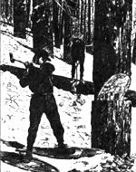

From Mother Nos. 67, 76, 90, 97
In five short years, 28 manufacturers have risen to the challenge of woodstove pollution.
MOTHER takes pride in the fact that over five years ago (in issue 67) we took a hard look at one of our own favorite forms of alterna tive energy-wood heat-and admitted that it had.some serious environmental problems . In the intervening years, we've shared current research on woodstove pollution . . . offered all the advice we could on ways to lessen one's wood burning impact (including a build-it yourself retrofit catalytic combuster, in issue 76, page 162). . . and highlighted the new com mercial offerings-from retrofit catalysts (is sue 90, page 102) to a new design that burns so cleanly it could conceivably be used without a chimney (issue 97, page 24)! The following pies; condensed from five years of our wood stove coverage and amended with the latest news, offers vital information about the wood burning pollution problem and what you can do about it.
If you've spent any time contemplating the curl of smoke from a woodstove flue, you've probably wondered just what was in that cloud . . . and whether it contained pollutants that might someday be recognized as harmful. But if you'd asked the experts before June of 1980, when the Monsanto Corporation completed a study for the Environmental Protection Agency (EPA), there really wouldn't have been much they could tell you. Up to that time, there was precious little solid technical information about the specific kinds and quantities of emissions produced by residential woodfueled appliances.
Since the alarming results of that study were published, though, scientists have rushed to get a handle on the problem. And study after study has confirmed that woodstoves, particularly the airtight models that became popular in the 1970s, do pose significant pollution problems. In some locales, woodstove pollution is quite serious, constituting the major source of particulate emissions. And on a national basis, wood burning produces a significant share of some very dangerous compounds.
According to Dr. Dennis Jaasma, a wood-combustion research scientist at Virginia Polytechnic Institute and State University, the most threatening pollutants are particulates, vapor-phase hydrocarbons, and carbon monoxide. All of these substances can be drawn deep into the lungs through normal breathing and thus pose various respira tory hazards to those exposed to them.
Scientists don't know for sure what the annual contribution of wood burning may be to the emission of these three groups of compounds, but estimates have been made that the numbers are 0.7%, 2.5%, and 4% respectively. (By comparison, diesel engines contribute about 1% of the national particulate emissions and are regulated by the Environmental Protection Agency.)
But it's actually a subcategory of the particulates and vapor-phase hydrocarbons that may be of the greatest concern. It seems that woodstoves are prolific producers of compounds known as polycyclic organic matter (POM). Many POM are known to be mutagenic or carcinogenic, and it has been estimated that woodstoves emit about 40% of the total annual load of these compounds in our atmosphere. The EPA further estimates that woodstoves produce 90% of the POM emitted from all sources other than transportation-making them a far greater concern than fossil fuel-fired powerplants or industry.
The insistence of regulators that woodstove pollution be controlled has played no small role in the development of new wood burning technologies, and the ball may only have begun to roll. Today, Oregon has a regulation that, effective July 1, 1986, prohibits the sale of stoves that fail to meet its emission requirements. Colorado, too, has passed a law that will begin to take effect in 1987.
But the biggest player on the horizon is the United States Environmental Protection Agency. In an uncharacteristic show of expeditiousness-brought on at least in part by legal pressure concerning POM from New York State and the Natural Resources Defense Council under the Clean Air Act-the EPA now plans to propose a woodstove emissions rule by January 1, 1987, that might take effect by the first day of 1988. What this means is that in a very big hurry (perhaps less than two years from now), the conventional airtight woodstove could be on its way to extinction.
Today, there are 28 woodstoves certified for sale in Oregon. (Only 19 of those can stand up to Oregon's more stringent 1988 requirement.) However, with EPA's regulation little more than one development season away, you can expect to see the number of clean burners increase rapidly. As it's said, Necessity is the mother of invention.
At present, performance figures from Oregon's Department of Environmental Quality (DEQ) make up the largest body of data about clean-burning stoves. Still, though numbers may not lie, they can certainly be misrepresented.
Consequently, when you go shopping for a clean-burning woodstove, we encourage you to study performance claims carefully. Efficiency and emissions offer a good basis from which to begin selecting a woodstove, but there's more involved in picking the right heater. The heat output, for example, should be in a range that's useful for your house. And it may be important to you that the firebox hold enough wood for an allnight burn at the desired heat output.
One way that manufacturers have gotten noncatalytic stoves through DEQ testing is to use small fireboxes and prevent air inlets from being closed beyond a certain point. So, not all of the stoves listed by DEQ can be adjusted to a low enough burn to prevent overheating in small, well-insulated houses . . . and some can't achieve a great enough output for long enough to keep a large, poorly insulated home up to temperature.
Beyond these practical concerns, several factors limit the usefulness of the Oregon performance data to consumers. According to Paul Tiegs, senior principal scientist of 72 Omni Environmental Service-the laboratory that did most of the testing on the 28 stovesthe listed efficiency figures are accurate only to within plus or minus 5%. Thus you shouldn't pick one stove over another strictly because it can claim a few extra percentage points of efficiency.
Furthermore, the efficiency/emissions figures from Oregon are adjusted to suit the climate and wood burning conditions in that state. DEQ researchers studied the habits of Oregon wood burners and determined that they fire their heaters at medium-to-low rates (a heat output of about 13,000 Btu/hour, or three pounds per hour in a conventional heater) and in about six-hour cycles. Consequently, the "weighted" average efficiency and emission figures you might find in a manufacturer's literature or in performance ratings on stove labels are statistically biased toward 13,000 Btu/hour. If you operate one of these stoves at more or less than that rate, the absolute efficiency and emissions (as well as its performance in relation to another heater) could be dramatically different.
Woodstove efficiency figures are inevitably likened to EPA fuel mileage ratings for cars. The lessons are much the same: Though these numbers are for comparison purposes only-your actual efficiency and emissions "may vary"-the performance of any of these stoves will be significantly better than that of your present one. You'll find that you're getting more heat from your wood or-if you keep the stove turned down-that burn time is dramatically extended.
If you're burning four cords of $100-per-cord wood each year (and be realistic about what wood really costs), stepping up from a 50% efficient black box to a 75% high-tech stove will save you $130 in firewood alone in the first year. Add to that the cost (or aggravation) of chimney cleaning that you can save, and you've got a pretty convincing economic argument for buying a new stove. The health argument is even stronger: Using one of these stoves can be a "Clean Air Act" of your own.
There are some very positive sides to recent woodstove emissions research. In the last few years, we've learned more about the physics of combustion than in all the years since humankind discovered fire. As a result, not only are new stove designs and aftermarket products rapidly being developed, but a wealth of information concerning how a woodstove owner can operate his or her stove in a cleaner fashion has also become available. The five rules that follow should help anyone burn wood a little bit cleaner.
Rule 1: Use the largest-diameter logs that will burn effectively. Big pieces of wood have less surface area per unit of volume . . . which prevents them from releasing volatiles (a process called pyrolysis) too rapidly. This has been recognized as the single most effective operator technique for reducing emissions!
Rule 2: Build as small a fire as is practical. A stuffed firebox often leads to areas of pyrolysis or charring (the late, charcoal stage, of burning) that can't be reached by an adequate air supply, resulting in incomplete combustion.
Rule 3: Keep the fire hot. Position the logs in your stove so that air can move through the fire zone, and be sure there's sufficient draft opening.
Rule 4: Don't increase or decrease the draft setting dramatically. Pyrolysis continues for some time after the air supply has been cut back . . . so slamming the damper shut can send much of your hardwon fuel up the chimney. On the other hand, rapid opening of the damper can carry the pyrolytic products away from the fire too quickly.
Rule 5: Avoid excessively wet or dry wood. Logs that are too dry pyrolyze very quickly, overloading the combustion zone with volatile gases . . . while very wet wood can inhibit effective combustion by absorbing heat for evaporation. Standard air-dried soft or hard firewood (with 15-25% moisture content) seems to be the cleanest burning fuel.
Woodstoves Certified by Oregon DEQ (as of 4/20/86)
|
 |
|
|